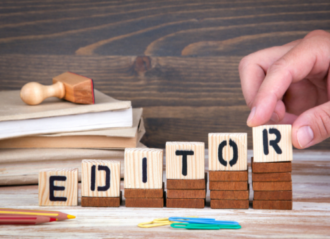

편집자에게 필요한 노력

1.인내와 끈기
같은일을 반복해서 진행하기때문에 쉽게 실증이 날 수 있는 작업이라 인내와 끈기를 가지고 편집하는것이 좋습니다.
2.트렌디함
편집자는 방송하는 사람들의 대화나 말을 가지고 덧붙여서 영상의 질을 높여주는 역할을 한다고 생각하기때문에 시청자들에게 웃음을 주기 위해서는 현재 사람들이 즐겨보는것을 파악할 필요가 있습니다.
-------------------------------------------------------------------------------------------------------------------------
-편집자의 장점-
1.(유튜브 기준)최근에 4차산업 시대에 인터넷 사용이 급증함에 따라 사람들의 영상시청도 같이 증가하여 영상편집자의 일자리의 수요가 증가하게 되었다. (전망 좋음) + 취업하기 쉽고 진입장벽이 낮다.
2. 재택근무 가능!
3. 시간에 구애받지 않는다.
-편집자의 단점-
!장점이 있으면 단점도 있다.
1.편집하는데 걸리는 시간이 오래 걸린다는 것이 단점입니다. 같은일을 반복적으로 하는 편집자는 목과 허리에 통증이 심해 디스크가 오기 쉽습니다. + 눈에 피로가 심함.
2.작업량이 많으면 일상생활 불가능...
비디오